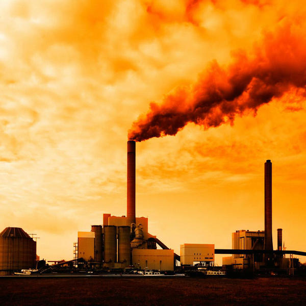
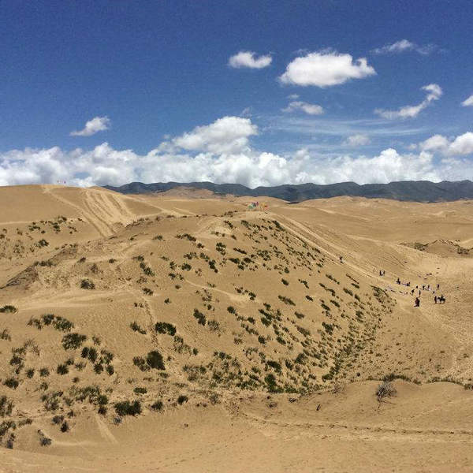

环保措施
冬季的空调温度调至18度或以下。如您感觉有些寒冷可以多加件衣服，如此简单的举措就可以节约电力，从而减少燃煤发电排放出的二氧化碳等温室气体，减缓气候变暖。 夏季的空调温度调至26度或以上。大城市的空调负荷约占盛夏最大供电负荷的40%－50%，将空调的温度从22-24℃提高到26-28℃，可以降低10%-15%的电力负荷，减少4-6亿度以上的耗电量。 人在夏天出些汗是有利于健康的，能增强新陈代谢、调节内分泌功能并促进自身免疫。
家中的普通灯泡换为节能灯泡，并且要购买经过“国家节能产品认证”的产品，您可以通过是否印有“节”字标志来判断。在相同光通量条件下，节能灯比白炽灯可节约电能80%，用于购买节能灯的费用，在(8～10)个月的电费节余中就可以收回。
环境现状

中国大气环境面临的形势非常严峻，大气污染物排放总量居高不下。2011年中国二氧化硫年排放量高达1857万吨，烟尘1159万吨，工业粉尘1175万吨，大气污染仍然十分严重。

中国是一个干旱缺水严重的国家。淡水资源总量为28000亿立方米，占全球水资源的6%，仅次于巴西、俄罗斯和加拿大，居世界第四位但人均只有2200立方米。

中国国土上的荒漠化土地已占国土陆地总面积的27.3%，而且，荒漠化面积还以每年2460平方公里的速度增长。中国每年遭受的强沙尘暴天气由50年代的5次增加到了90年代的23次。